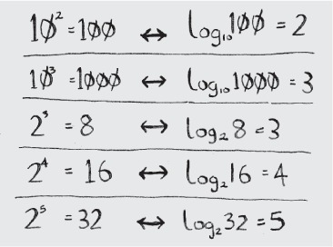

Бинарный поиск
Предположим, вы ищете фамилию человека в телефонной книге. Она начинается с буквы «К». Конечно, можно начать с самого начала и перелистывать страницы, пока вы не доберетесь до буквы «К». Но скорее всего для ускорения поиска лучше раскрыть книгу на середине: ведь буква «К» должна находиться гдето ближе к середине телефонной книги.
Или предположим, что вы ищете слово в словаре, и оно начинается с буквы «0». И снова лучше на чать с середины.
Теперь допустим, что вы вводите свои данные при входе на Facebook. При этом Facebook необходимо проверить, есть ли у вас учетная запись на сайте. Для этого ваше имя пользователя нужно найти в базе данных. Допустим, вы выбрали себе имя пользователя «karlrnageddon». Facebook может начать с буквы А и проверять все подряд, но разумнее будет начать с середины.
Перед нами типичная задача поиска. И во всех этих случаях для решения задачи можно применить один алгоритм: бинарный поиск.
Бинарный поиск - это алгоритм; на входе он получает отсортированный список элементов (позднее я объясню, почему он должен быть отсортирован). Если элемент, который вы ищете, присутствует в списке, то бинарный поиск возвращает ту позицию, в которой он был найден. В противном случае бинарный поиск возвращает null.
Например:

Рассмотрим пример того, как работает бинарный поиск. Сыграем в простую игру: я загадал число от 1до100.

Вы должны отгадать мое число, использовав как можно меньше попыток. При каждой попытке я буду давать один из трех ответов: «мало», «много» или «угадал».
Предположим, вы начинаете перебирать все варианты подряд: 1, 2, 3, 4... Вот как это будет выглядеть.

Это пример простого поиска (возможно, термин «тупой поиск» был бы уместнее). При каждой догадке исключается только одно число. Если я загадал число 99, то, чтобы добраться до него, потребуется 99 попыток!
Существует другой, более эффективный способ. Начнем с 50.

Слишком мало ... но вы только что исключили половину чисел! Теперь вы знаете, что все числа 1-50 меньше загаданного. Следующая попытка: 75.

На этот раз перелет... Но вы снова исключили половину оставшихся чисел! С бинарным поиском вы каждый раз загадываете число в середине диапазона и исключаете половину оставшихся чисел. Следующим будет число 63 (по середине между 50 и 75).

Так работает бинарный поиск. Попробуем поточнее определить, сколько чисел будет исключаться каждый раз.

При бинарном поиске каждый раз исключается половина чисел.
Какое бы число я ни задумал, вы гарантированно сможете угадать его не более чем за 7 попыток, потому что с каждой попыткой исключается половина оставшихся чисел!
Предположим, вы ищете слово в словаре с 240 ООО словами. Как вы думаете, сколько попыток вам понадобится в худшем случае?
При простом поиске может потребоваться 240 ООО попыток, если искомое слово находится на самой последней позиции в книге. С каждым шагом бинарного поиска количество слов сокращается вдвое, пока не останется только одно слово.

Итак, бинарный поиск потребует 18 шагов - заметная разница! В общем случае для списка из n элементов бинарный поиск выполняется за log2n шагов, тогда как простой поиск будет выполнен за n шагов.
Логарифмы
Возможно, вы уже забыли, что такое логарифмы, но навернека помните, что такое возведение в степень. log10100 по сути означает, сколько раз нужно перемножить 10, чтобы получилось 100. Правильный ответ - 2: 10 x 10. Итак, log10100 = 2. Логарифм по смыслу противоположен возвидению в степень.
 Логарифм - операция, обратная возведению в степеньКогда будет упоминатся «О-большое» (об этом позднее), log всегда означает log2. Когда вы ищете элемент с применением простого поиска, в худшем случае вам придется проверить каждый элемент. Итак, для поиска из 8 чисел понадобится не более 8 проверок. Для бинарного поиска в худшем случае потребуется не более logn проверок. Для списка из 8 элементов log8 = 3, потому что 23 = 8. Итак для списка из 8 чисел вам придется проверить не более 3 чисел. Для списка из 1024 элементов log 1024 = 10, потому что 210 = 1024. Следовательно, для списка из 1024 чисел придется проверить не более 10 чисел.
ПРИМЕЧАНИЕ
Бинарный поиск работает только в том случае, если список отсортирован. Например, имена в телефонной книге хранятся в алфавитном порядке, и вы можете воспользоваться бинарным поиском.
Реализация
Посмотрим, как написать реализацию бинарного поиска на JavaScript.
Функция binarySearch получает отсортированный массив и значение. Если значение присутствует в массиве, то функция возвращает его позицию. Если значение не будет найдено, возвращается -1. При этом мы должны следить за тем, в какой части массива проводится поиск. Вначале это весь массив.

Каждый раз алгоритм проверяет средний элемент.
Если названное число было слишком мало, то переменная low обновляется соответственно.
А если догадка была слишком велика, то обновляется переменная high.

Полный код выглядит так: